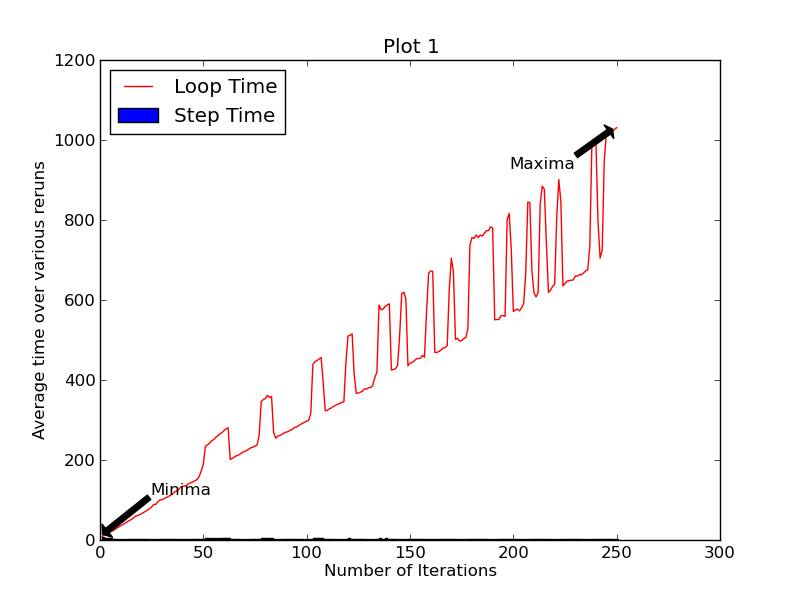
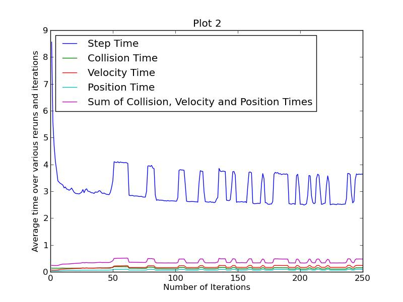
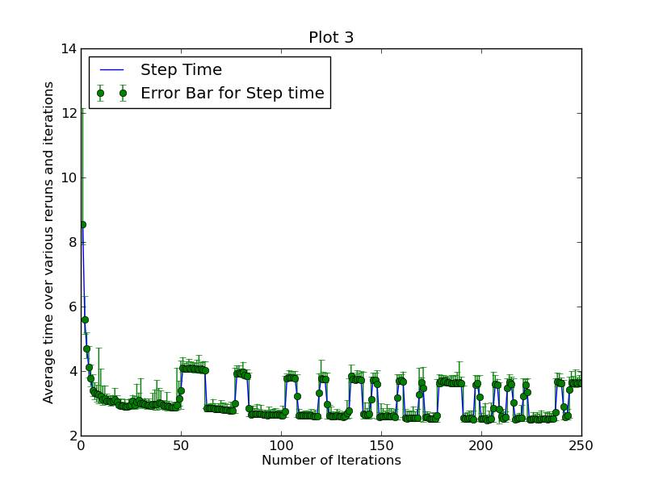
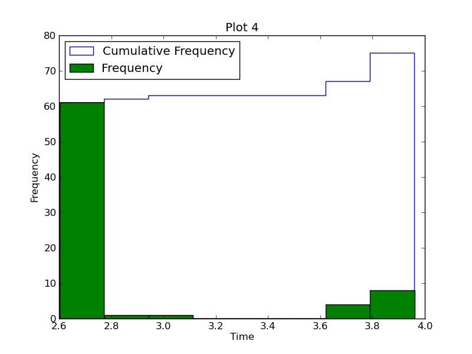
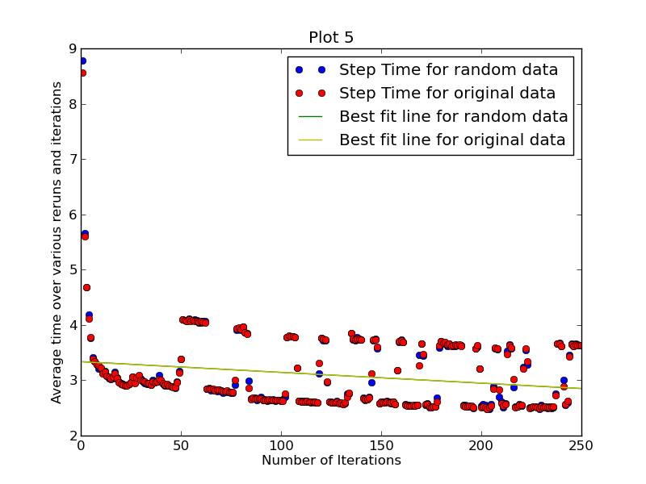
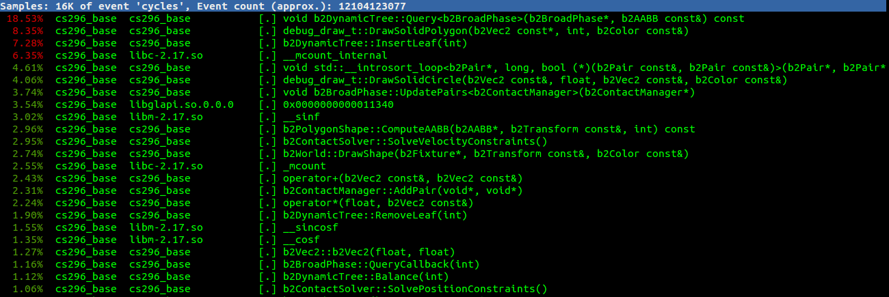
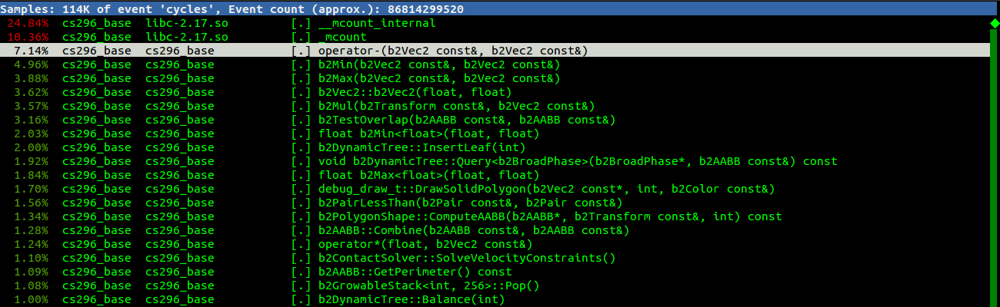
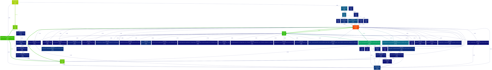
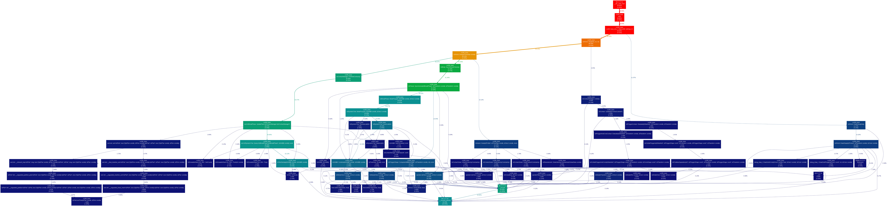

- Timing of the code
Step time is the time taken for each iteration and the loop time is the total time taken for all the iterations since we are calculating the difference between the times of start of the loop and end of the loop to calculate the loop time. To calculate the step time we use an inbuilt function which gives the time taken for each step. Clearly the loop time is much larger than the step time because its is roughly the cumulative sum of the step times.
We analysed our code based on the average time taken over the number of iterations and plotted various graphs. We get a pretty uniform curve apart from the frequent spikes. This happens because after specific time intervals which denote the extra time taken for calculating the motion of the gears in the clock, due to contact/collisions. These are the graphs of the time taken for each step, velocity update, position update, collision update varied over the number of iterations.

Figure 6: Plot of Average loop time vs No. of iterations
As seen in the first plot, the graph of step time is not even visible when plotted with the loop time. Also the loop time increases roughly with the increase in the number of iterations.

Figure 7: Plot of Average update time vs No. of iterations
Next, in plot 2 we plotted the Step time, collision time, velocity time, position time and the sum of collision, velocity and position time against the number of iterations. First interesting thing to notice is that the step time is very high till around the first 30 iterations. The reason behind it is the heavy functions called by Box2D to initialize the body, joint and fixture objects etc. and all the preprocessing that is done by Box2D for calculating the parameters (e.g AABB ,contact manifolds) which can be updated easily and are useful to make the simulation efficient in the future iterations.
We also note that the velocity time is greater than the position time and collision time. This is because velocity iterations also involve the calculations and updates of some body parameters.

Figure 8: Plot of Frequency vs Time

Figure 9: Plot of Average step time vs No. of iterations
Plot 3 and plot 4 were plotted for the error analysis of the data. In plot 3, we notice that the value of error is high initially,varies in between (even though the variations are very small they are noticeable) and becomes stable towards the end.This is due to the changing state of the CPU. Since we opened and closed different programs on the CPU while running the process, it shows the variations. In plot 4 we run the the simulation 84 times and analyse the step time for the 84th iteration.

Figure 10: Plot of Average step time vs No. of iterations
Plot 5 was plotted taking random sample points to examine their values.
- Profiling
We ran the simulation using different Box2D compile parameters, one using Release and the other using Debug mode and did Profile analysis for both methods.
We see that different functions take different proportion of the total time in the two modes. This is because in Release mode, the -O3 option along with g++ command optimises the run time, where 3 denotes the level of optimisation (i.e., -O3 does more optimisation than -O2), but sacrifices on the compile time. So if a function is called more number of times in the code, it will be a better candidate for optimisation, hence the difference in the proportion of time taken by each function in the two modes.
We also notice that the event count in Debug mode is around 8 times the event count in Release mode since the Debug mode compiler additionally performs calls to debugging functions.

Figure 11: Proportion of total time taken by few processes in Release mode (10,000 iterations)

Figure 12: Proportion of total time taken by few processes in Debug mode (10,000 iterations)
From the above results, we infer that the function b2DynamicTree::Query< b2BroadPhase >(...) takes the maximum proportion of the total loop time in Release mode, while the call to __mcount_internal takes the maximum proportion of the total loop time in Debug mode.

Figure 13: Call Graph for Release mode : 10000 iterations

Figure 14: Call Graph for Debug mode : 10000 iterations
We observe that in general, the number of states/nodes in the call graph of the Debug mode is greater than the number of states/nodes in the call graph of the Release mode. This is because there was optimisation done in Release mode, and also because extra calls to debugging functions are called because the mode is Debug, which generates additional data to aid debugging.